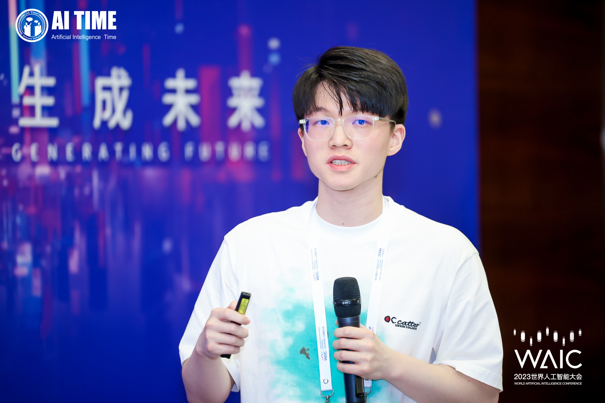

Tongtian Zhu
"Convince future generations, not just peers."

Hi there 😃. I am Tongtian Zhu (prounced as “Tong-tee-an Joo”), a second-year PhD student at the Computer Science Department of Zhejiang University (ZJU), supervised by Professors Mingli Song and Chun Chen. Before joining ZJU, I was a a research intern at JD Explore Academy (JDE), working on the generalization theory of decentralized learning, mentored by Doctor Fengxiang He and Professor Dacheng Tao. My current research focuses on examining the theoretical foundations of decentralized learning. I am also dedicated to utilizing elegant theoretical insights to construct fast and generalizable decentralized learning algorithms.
Google Scholar Email WeChat Github Zhihu
🦄 Research Interest
In the science aspect, my primary research interest lies in understanding the mechanisms underpining the practical success of deep learning. In the technology aspect, I am passionate about developing machine learning methodologies inspired by principles.
Please always feel free to contact (via email or WeChat) if you have any questions, are interested in collaborating, or simply want to chat.
🔥 News
| Jul 12, 2023 | I give a long talk (video, slides) at Beijing Academy of Artificial Intelligence (BAAI) about our DSGD-SAM paper! |
|---|---|
| Jul 11, 2023 | I give a long talk at Westlake University on the generalization benefits of decentralization! |
| Jul 8, 2023 |
I give a talk at World Artificial Intelligence Conference (WAIC) on the generalization benefits of decentralization!

|
| Apr 25, 2023 |
Our paper “Decentralized SGD and Average-direction SAM are Asymptotically Equivalent” is accpeted at ICML 2023!
.png)
|
| Feb 11, 2023 | Our paper “Contrastive Identity-Aware Learning for Multi-Agent Value Decomposition” is accpeted at AAAI 2023 (Oral)! |
| Dec 6, 2022 | I am awarded as a Merit PhD student/Triple A PhD student of Zhejiang University on 2021-2022 (top 10%)! |
| May 17, 2022 | Our paper “Topology-aware Generalization of Decentralized SGD” is accepted at ICML 2022 (Spotlight)! |
📝 Selected Publications
- ICML 2022 (Spotlight)
 Topology-aware Generalization of Decentralized SGDIn Proceedings of the 39th International Conference on Machine Learning, 17–23 jul 2022
Topology-aware Generalization of Decentralized SGDIn Proceedings of the 39th International Conference on Machine Learning, 17–23 jul 2022
.png)
📚 Academic Services
- Conference Reviewer: ICML 2022, 2023; NeurIPS 2022, 2023; AISTATS 2023; UAI 2023; ECML 2023; ACML 2022.
- Journal Reviewer: Information Science.
🤗 Miscellaneous
- I am an (old-school) ACG fan. My favorites range from Detective Conan and Pokemon to Attack on Titan.
- I am also a basketball fanatic.